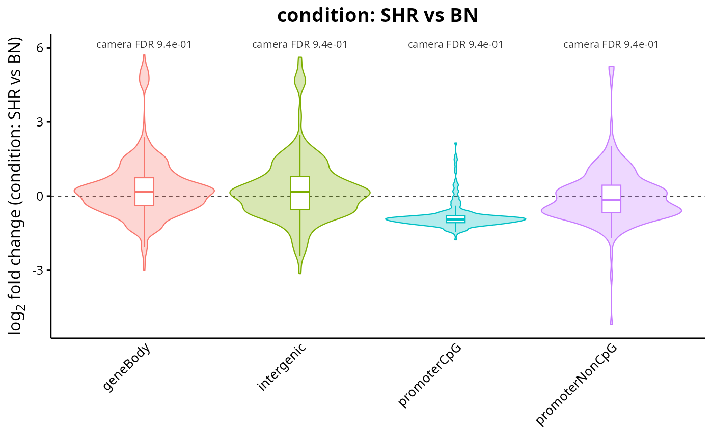
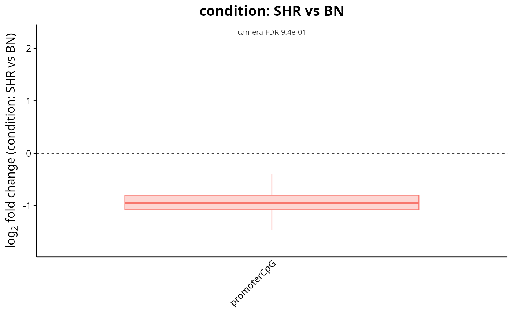

Draws the whole distribution of the per-region log2 fold changes of every set, rather than its summary. A set whose mean has moved because a small group of regions collapsed looks nothing like one whose regions all shifted a little, and only the distribution tells the two apart.
Usage
plotSetDistribution(
setResults,
style = "violin",
set = NULL,
contrast = NULL,
annotate = TRUE,
colours = NULL,
title = NULL,
subtitle = NULL,
legendPosition = NULL,
baseSize = 12
)Arguments
- setResults
RegionSetDE.setResultsorRegionSetDE.setResultsListobject.- style
String with the kind of plot, one of
"violin","boxplot"and"ecdf". Default:"violin".- set
Character vector with the names of the region sets to draw. Default:
NULL, all of them.- contrast
String with the name of the contrast to draw, or its position, when
setResultsholds several of them. Default:NULL.- annotate
Logical value to indicate whether the effect size and the adjusted p-value must be written above each set. Ignored for
style = "ecdf". Default:TRUE.- colours
Named character vector with one colour per region set. Default:
NULL.- title
String with the title of the plot, rendered as markdown. Default:
NULL, the contrast.- subtitle
String with the subtitle of the plot, rendered as markdown. Default:
NULL.- legendPosition
String with the position of the legend. Default:
NULL, no legend for the violins and the boxplots, where the sets are already named on the axis, and a legend for the cumulative curves, where they are not.- baseSize
Numeric value with the base font size. Default:
12.
Examples
fit <- loadExampleData("fit", verbose = FALSE)
setResults <- testRegionSets(fit, contrast = c("condition", "SHR", "BN"),
verbose = FALSE)
# The whole fold change distribution behind each set-level statistic
plotSetDistribution(setResults)

plotSetDistribution(setResults, style = "boxplot", set = "promoterCpG")
